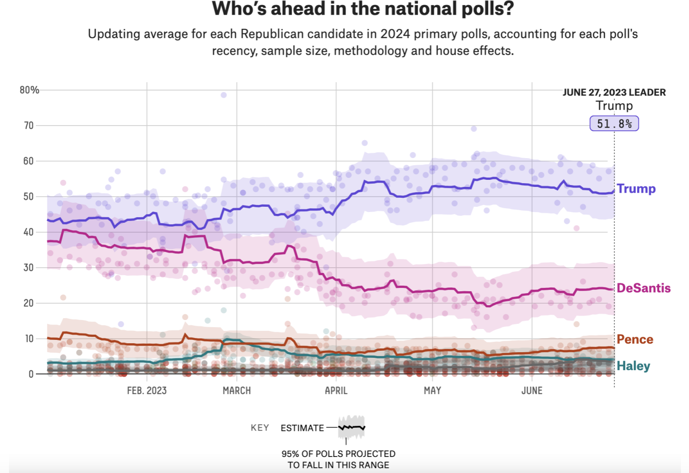

GOP Primary Nomination Tracking with Google Trends
Google Trends
Data Journalism
Politics
CICD
Introduction
Yes, I guess I’m on a bit of a google trends kick lately. The more I look into searches, the more I’m impressed by the interesting and vast amount of data avaiable.
For example, i recently learned that Google Trends is quite effective in predicting large elections here and here. I even went through the exercise of looking myself at the last 5 US elections. Excluding the 2020 election, the winning candidate had more search volume months leading up to the elections. The trend did not hold for Trump’s last election, but maybe we chalk that up to Trump being a peculiar candidate or 2020 being a peculiar year. I may decide to do an analysis on this later.
Honing in on the GOP Primary Nomination
My thought was that if Google Trends can be effective for US Presidential Elections, what about Primaries?
For this I wanted to make a stream chart to display these results for two reasons: 1. You can see the relative importance each candidate has to one another given by vertical distance of each color at a given point in time. 2. You also get a sense of the total search volume of all candidates given by the vertical distance of all colors at a given point in time. I plan to keep this chart updated up until the primary election. I guess we’ll see how accurate it is in the end 🤷♂️.
Note
This graph was last updated: 00:47:26 on 05 Jul 2023
Observation 1
For these charts like other Google Trends data, its helpful to read the spikes. For example, we can see different candidates spiking at different times. Nikki Haley spikes in mid-February then dies down. Trump spiked in April. Ron DeSantis and Tim Scott both spiked in June around the same time.
Observation 2
Overall, it seems like Trump is taking the lionshare of hits. DeSantis is the next closest person. Then, after that, the others have few searches relatively.
Tip
I expect the graph to look more and more like a funnel as the primary nomination approaches and more people search these candidates, but we’ll see. Check back as this will be updated on a daily basis 👀
Comparing aggregator to Google trends
As a bit of validation, aside from spikes in the google trends data (likely due to Trump court shenanigans), it is similar to the 538 polling aggregator. For instance, if you rescale the side bar chart numbers to 100, Trump has 55% of the hits, DeSantis has 25%, Nikki Haley has 10% and the others have 5%.

For one of my next project before the election, I am planning on building an election model and from my analysis with this google trends data, I am convinced that it could be a useful predictor of an election result in a model.
Feel free to leave share comments/thoughts below 🙂